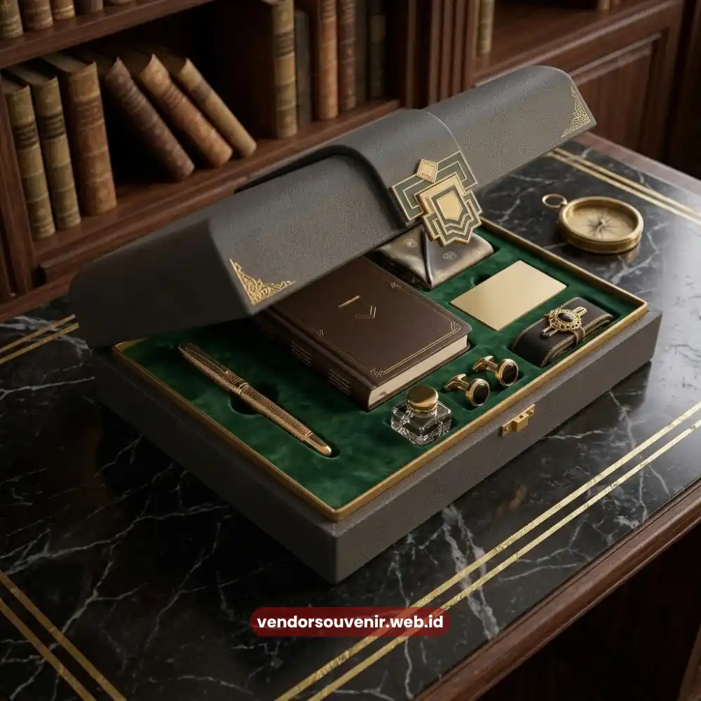

Daftar Isi
Biaya welcome kit karyawan umumnya dipengaruhi oleh jenis dan jumlah barang, teknik branding yang digunakan, bahan yang dipilih, serta jumlah unit yang dipesan dalam satu kali produksi.
Memahami faktor-faktor ini membantu perusahaan menyusun anggaran onboarding yang lebih realistis sejak tahap perencanaan.
- Biaya welcome kit dipengaruhi oleh jenis barang, bahan, teknik branding, dan jumlah pesanan.
- Semakin banyak jumlah unit yang dipesan, biaya per unit umumnya dapat lebih efisien.
- Kombinasi barang esensial dengan barang bernilai tambah membantu menjaga anggaran tetap terkendali.
- Vendor Souvenir menyediakan estimasi harga transparan sesuai kebutuhan dan anggaran perusahaan.
Apa Saja Faktor yang Memengaruhi Biaya Welcome Kit Karyawan?
Faktor yang memengaruhi biaya welcome kit karyawan meliputi jenis dan jumlah item dalam satu paket, kualitas bahan yang digunakan, teknik branding yang diterapkan, serta volume pemesanan secara keseluruhan.
Jenis dan jumlah item menjadi faktor paling langsung memengaruhi total biaya. Paket welcome kit yang hanya berisi alat tulis dasar tentu memiliki struktur biaya berbeda dibandingkan paket yang menambahkan apparel.
Apalagi jika ditambahkan perlengkapan elektronik pendukung kerja. Semakin beragam dan semakin banyak item dalam satu paket, semakin tinggi pula biaya yang perlu dianggarkan perusahaan.
Kualitas bahan turut berperan signifikan dalam menentukan biaya. Bahan dengan daya tahan lebih tinggi atau bahan ramah lingkungan umumnya memiliki harga dasar yang lebih tinggi dibandingkan bahan standar.
Perusahaan perlu menyeimbangkan antara kualitas bahan dan anggaran yang tersedia agar hasil akhir tetap sesuai ekspektasi tanpa membebani biaya operasional.
Teknik branding, seperti sablon, bordir, atau gravir, juga memiliki struktur biaya yang berbeda. Teknik dengan tingkat presisi lebih tinggi umumnya membutuhkan biaya tambahan.
Proses pengerjaan yang lebih rumit juga akan menambah biaya dibandingkan teknik cetak standar yang lebih umum digunakan.

Faktor-faktor yang Memengaruhi Biaya Welcome Kit
Bagaimana Cara Menyusun Anggaran Welcome Kit yang Efisien?
Menyusun anggaran welcome kit yang efisien dapat dilakukan dengan menentukan prioritas item esensial terlebih dahulu. Serta penyesuaian jumlah pesanan dengan kebutuhan riil dan konsultasi sejak awal.
Menentukan prioritas item esensial membantu perusahaan mengalokasikan anggaran pada barang yang benar-benar memberikan dampak fungsional dan simbolis terbesar bagi karyawan baru.
Setelah kebutuhan esensial terpenuhi, perusahaan dapat mempertimbangkan penambahan item pelengkap sesuai sisa anggaran yang tersedia.
Penyesuaian jumlah pemesanan dengan kebutuhan riil juga penting untuk menghindari pemborosan anggaran akibat stok berlebih pada masa mendatang.
Perusahaan yang memiliki proyeksi rekrutmen jangka pendek dapat mempertimbangkan pemesanan bertahap sesuai kebutuhan kuartalan atau semesteran.
Sementara perusahaan dengan kebutuhan rekrutmen skala besar dapat mempertimbangkan produksi dalam volume yang lebih besar sekaligus untuk efisiensi harga.
Konsultasi harga sejak tahap awal perencanaan membantu perusahaan mendapatkan gambaran biaya yang lebih akurat sebelum menetapkan anggaran final.
Diskusi ini juga membuka peluang penyesuaian kombinasi barang apabila anggaran awal belum sesuai dengan estimasi biaya yang diberikan oleh vendor.
Apakah Jumlah Pemesanan Memengaruhi Harga per Unit Welcome Kit?
Jumlah pemesanan umumnya memengaruhi harga per unit welcome kit, di mana volume pemesanan yang lebih besar cenderung menghasilkan efisiensi biaya produksi per unit.
Efisiensi ini terjadi karena sebagian besar biaya produksi, seperti biaya setup cetak atau biaya pengadaan bahan baku, dapat dibagi ke lebih banyak unit ketika volume meningkat.
Hal ini membuat biaya per unit pada pemesanan skala besar cenderung lebih rendah dibandingkan pemesanan dalam jumlah terbatas yang memerlukan setup cetak yang sama.
Meski demikian, perusahaan tetap perlu mempertimbangkan proyeksi kebutuhan riil sebelum memutuskan volume pemesanan agar anggaran terserap secara optimal.
Memesan dalam jumlah besar tanpa proyeksi kebutuhan yang jelas berpotensi menimbulkan stok berlebih yang justru kurang efisien dari sisi pengelolaan anggaran jangka panjang.
Bagi perusahaan dengan kebutuhan rekrutmen berkelanjutan, pendekatan pemesanan berkala dengan volume disesuaikan dapat menjadi strategi paling seimbang.
Pendekatan ini menjaga efisiensi biaya sembari menghindari penumpukan stok barang di gudang operasional perusahaan dalam jangka waktu yang lama.
Menyusun anggaran welcome kit yang tepat selalu membutuhkan pemahaman menyeluruh terhadap faktor-faktor yang memengaruhi biaya, mulai dari jenis barang hingga volume pemesanan.

Dapatkan Estimasi Biaya Welcome Kit Terbaik untuk Perusahaan Anda
Pertanyaan yang Sering Diajukan (FAQ)
Apakah biaya welcome kit selalu lebih murah jika dipesan dalam jumlah besar?
Secara umum biaya per unit dapat lebih efisien pada volume pemesanan yang lebih besar, meskipun perusahaan tetap perlu menyesuaikan jumlah pesanan dengan kebutuhan riil.
Apakah teknik branding memengaruhi total biaya welcome kit secara signifikan?
Teknik branding dapat memengaruhi biaya tergantung tingkat kerumitan dan presisi proses pengerjaan, sehingga sebaiknya didiskusikan sesuai anggaran yang tersedia.
Bagaimana cara mendapatkan estimasi biaya welcome kit yang sesuai anggaran perusahaan?
Perusahaan dapat berkonsultasi langsung dengan vendor untuk menyampaikan kebutuhan dan anggaran, sehingga estimasi biaya yang diberikan lebih sesuai dengan kondisi perusahaan.
Maroon Souvenir
Partner Corporate Gift terpercaya di Indonesia. Berpengalaman melayani ratusan perusahaan sejak 2018.
Lihat Portofolio Kami